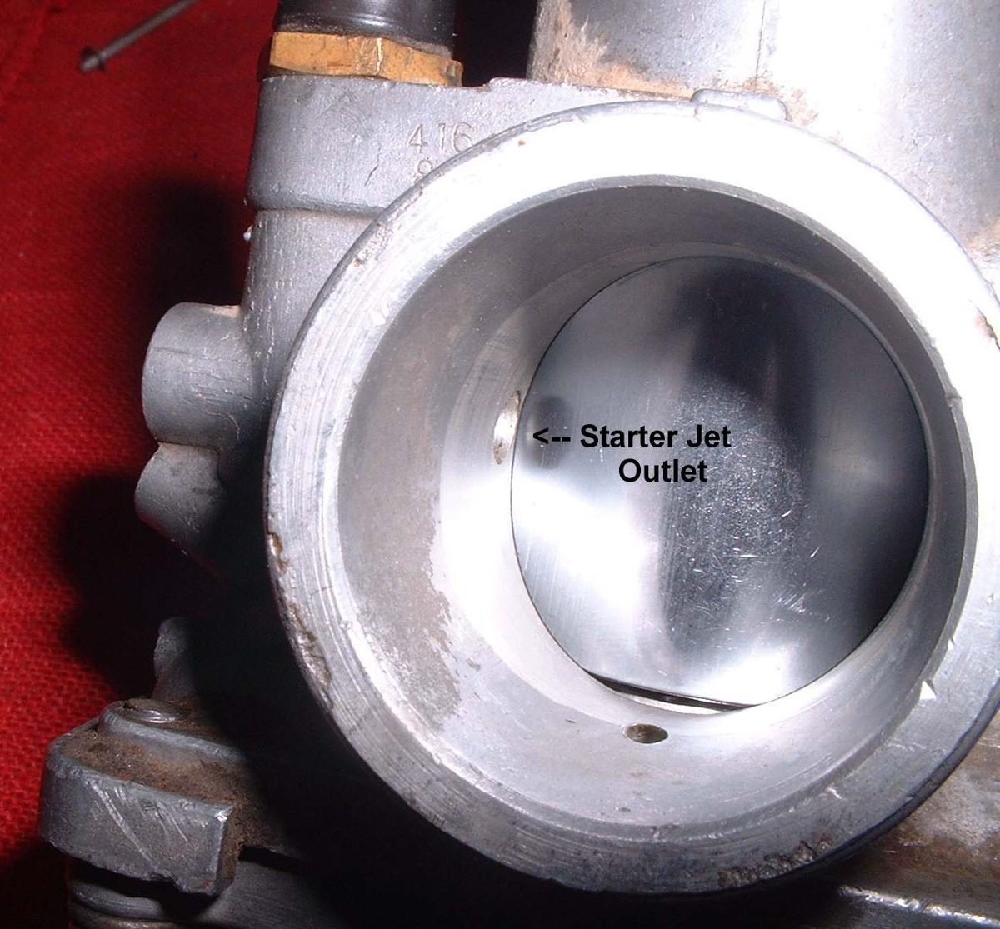
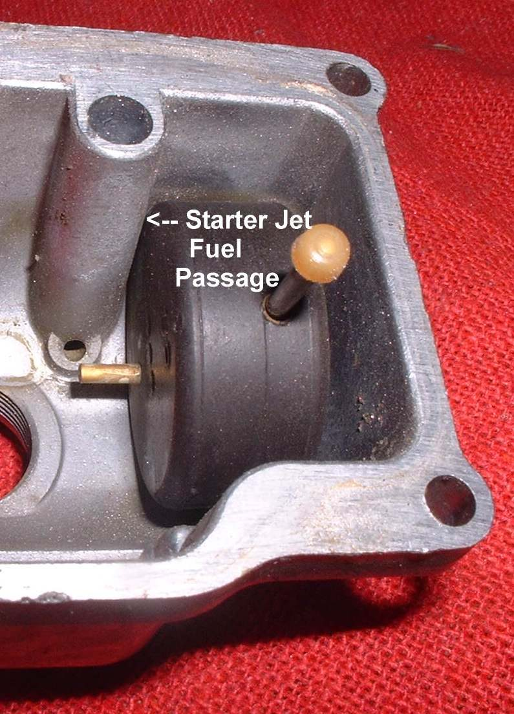
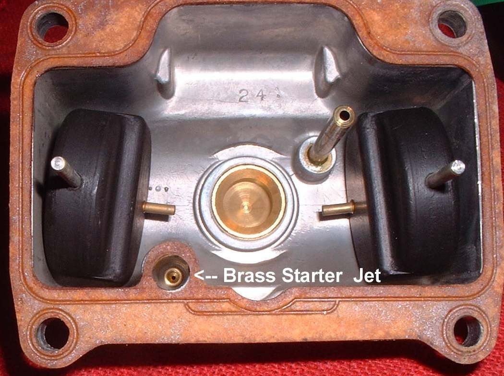
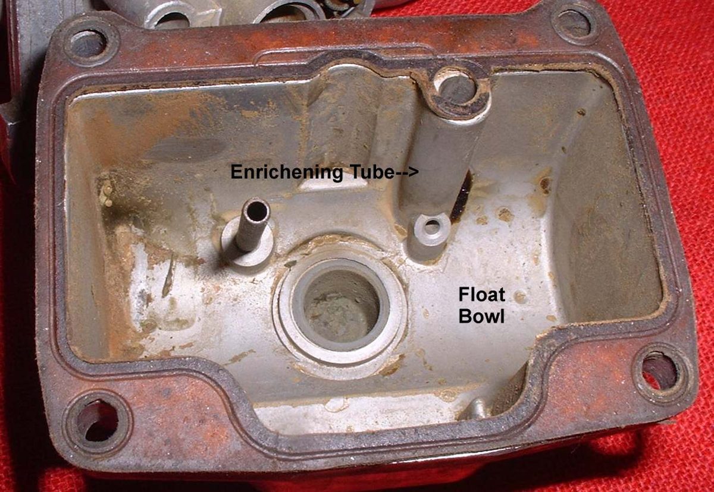

Many bike carburettors do not have a butterfly in the throat. They have a starter circuit: a plunger or lever, worked by the choke control, opens a passage from the float bowl to the engine side of the throttle. That circuit gives the rich mixture for a cold start. It works only when the throttle is closed. Opening the throttle even a little cuts it out. If this circuit blocks, the engine does not start, or starts only with difficulty, or the choke has no effect.
Safety
- Fuel is flammable. Work in good air with no flames.
- Wear goggles when spraying and blowing air.
You need
- The carburettor off the bike and the float bowl removed.
- Cleaner spray with a thin straw, a soft pick, air.
Steps
- First try a simple test. With the engine cranking, hold the throttle fully closed. If the engine now fires, the starter circuit is working and the throttle was too wide.
- Remove the float bowl. Find the starter jet. It is a very small hole cast in the bowl or at the end of a short tube that sticks into the bowl. On many carburettors the jet cannot be taken out. A few have a screw-in jet.
- Find the large passage in the carburettor body and the lower hole that it leads to. Spray cleaner down the large passage and see that it comes out at the lower hole. If it does not, the jet or passage is blocked.
- Clear the small jet with spray and air, and with a soft pick if needed. Hold the part in a rag when using air.
- Check the plunger that lifts and closes the passage. It should move freely and seat properly. Clean it with cleaner and a rag.
- Check the choke cable and lever too. See Adjust the choke cable and Check the choke or starter valve.
- Refit the float bowl with its gasket and check the float. See Check the carburettor float and needle valve.
Check your work
- Cleaner flows freely from the lower hole.
- The bike starts cold with the choke on and runs smoothly after the choke is off.
If it did not fix the problem
- Still hard to start: Hard to start when the engine is cold.
- Choke stays on: Choke is stuck on or will not work.